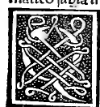

CAPITEL III¶
Nachdem die Vorrede beendet, wird zunächst erklärt, was man unter diesem Worte „Mathematik” zu verstehen habe.

Dieses Wort, erhabener Herzog, stammt aus dem Griechischen von: was in unserer Sprache etwa wie: „lehrbar” zu sagen klingt, und in unserem Falle versteht man unter mathematischen Wissenschaften und Disciplinen: Arithmetik, Geometrie, Astrologie, Musik, Perspective, Architektur, Kosmographie und einige andere davon abhängige Fächer. Nichtsdestoweniger werden von den Gelehrten gewöhnlich nur die vier ersten angenommen, nämlich Arithmetik, Geometrie, Astronomie und Musik, und die andern werden untergeordnete, d. h. von jenen vieren abhängige genannt. So wollen es Plato, Aristoteles und Isidoros in ihren Etymologien, und Severinus Boethius in seiner Arithmetik.
A ber unser Urtheil, obwohl schwach und niedrig, zwingt, dass es deren entweder drei oder fünf gäbe, nämlich Arithmetik, Geometrie und Astronomie, indem es die Musik von den genannten ausschliesst, aus ebensoviel Gründen, wie sie von den fünf die Perspective und aus ebensoviel Gründen zu den genannten jene hinzufügt, aus welchen jene zu den drei von uns genannten die Musik hinzufügen. Wenn diese sagen, die Musik befriedige das Gehör, einen der natürlichen Sinne, so befriedigt jene das Sehen, welches um so würdiger, insofern es erste Pforte des Geistes ist.
Wenn sie sagen, jene beachte die Klängezahl und das in der Zeit auferlegte Mass ihrer Hervorbringung; so diese die natürliche Zahl nach jeder Definition derselben, und das Mass der Gesichtslinien. Wenn jene die Seele erquickt durch die Harmonie, so erfreut diese sehr durch angemessene Distanz und Mannigfaltigkeit der Farben. Wenn jene ihre harmonischen Verhältnisse in Betracht zieht, so diese die arithmetischen und geometrischen. Und kurz, erhabener Herzog, bis jetzt — und schon sind es viele Jahre — dass mir dieses im Kopfe herumstreitet, ist mir von Niemand klar gemacht, warum eher vier als drei oder fünf anzunehmen. Gleichwohl glaube ich, dass so viel Gelehrte nicht irren. Und doch wird durch ihre Worte meine Unwissenheit nicht aufgedeckt. Weh’ mir!
Wer mochte nicht beim Anblick einer schönen Gestalt mit ihiren regelrechten wohlgeordneten Liniamenten, welcher nur der Athem zu fehlen scheint, dieselbe eher fast für etwas Göttliches als für etwas Menschliches halten. Und ebenso viel Dinge ahmt die Malerei der Natur nach, wie man nennen kann, was sich unsern Augen evident offenbart im vorerwähnten Bilde der brennenden Sehnsucht unseres Heilandes, wobei es nicht möglich, mit noch mehr die Apostel lebendig sich vorzustellen beim Klang der Stimme der untrüglichen Wahrheit, als er sprach: „Einer von Euch wird mich verrathen”; wo in Haltung und Gesticulationen der Eine zum Andern, und Dieser zu Jenem mit lebhaftem und traurigem Erstaunen zu reden scheint, so würdig ordnete mit seiner gewandten Hand unser Leonardo es an.
Wie man vom Zeuxis und Parosasius bei Plinius de picturis liest, dass jener, da er mit Parosasius in derselben Kunst wetteiferte, indem sie sich mit dem Pinsel herausgefordert, eine Kiste mit Trauben malte, von ihrem Weinlaub umschlossen, und öffentlich ausgestellt: die Vögel kamen wie zu einer wirklichen, sich darüber herzumachen; und der Andere machte einen Schleier: Darauf sagte Zeuxis zu Parosasius, nachdem auch er ihn ausgestellt, in dem Glauben, es wäre ein Schleier, der sein zum Wettkampf angefertigtes Werk bedeckte: „Nimm den Schleier weg, und lass dein Bild Jedermann schauen, wie ich mit dem meinigen es thue”, und so war er besiegt.
Denn wenn er die Vögel, die unvernünftigen Thiere, so täuschte Jener einen Vernünftigen und Meister, wenn mich nicht etwa das grosse Vergnügen und die höchste Liebe zu Jener (obgleich ihrer unkundig) täuscht. Und im Allgemeinen ist der kein feinfühlender Geist, den die Malerei nicht erfreut, wenn sie sogar das eine oder das andere vernünftige oder unvernünftige Thier zu sich lockt.
Daher bleibe ich dabei stehen, wenn nichts Anderes dazwischen tritt, dass es drei Hauptwissenschaften gebe, und die anderen untergeordnet sind, oder aber fünf, wenn Jene die Musik hinzuzählen, und durch nichts scheint mir die Perspective zurückzustehen, sofern sie nicht geringeren Lobes werth ist. Und ich bin gewiss, da es kein Glaubensartikel ist, dass man es mir nachsehen wird. Und das ist’s, was sich auf die genannte Benennung bezieht.